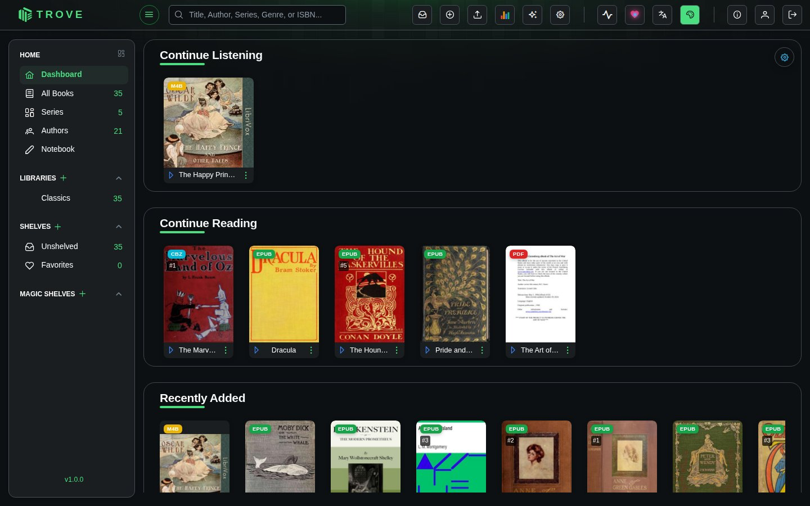
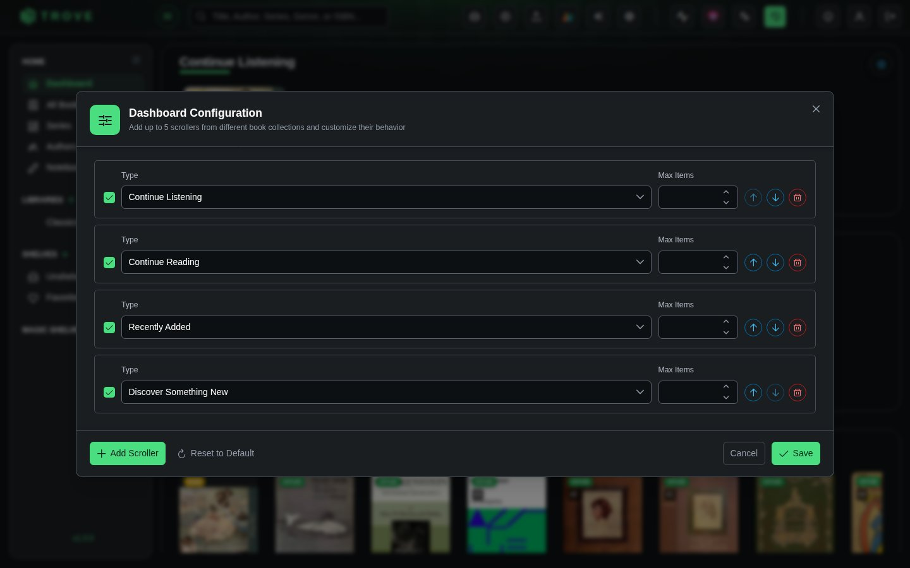

Dashboard
The dashboard is the first page you see after signing in: rows of covers that let you pick up where you left off, see what's new, or come across something you'd forgotten you had.
What's on it

Each row (a scroller) shows up to 20 books from one source. Click a cover to open the book. Out of the box there are four:
| Row | Shows |
|---|---|
| Continue Listening | Audiobooks you've started and not finished, most recent first |
| Continue Reading | Ebooks, PDFs and comics you've started and not finished, most recent first |
| Recently Added | The newest books in your libraries |
| Discover Something New | A random handful from your collection, different each visit |
A row with nothing to show is hidden, so Continue Listening only appears once you've started an audiobook.
Customising it
Click the cog at the top right of the dashboard to open Dashboard Configuration. The layout is yours alone; other users keep theirs.

| Setting | What it does |
|---|---|
| Checkbox | Shows or hides the row without removing it |
| Type | Where the books come from: Continue Reading, Continue Listening, Recently Added, Discover Something New, or a Magic Shelf |
| Max Items | How many books the row shows, from 10 to 20 |
| Arrows | Move the row up or down |
| Delete | Removes the row |
Choosing Magic Shelf adds three more settings: which magic shelf to show, the Sort Field (title, author, date added, series, rating, last read and more) and the Direction. The row takes the shelf's name.
You can have up to five rows and need at least one. Add Scroller adds a row at the bottom; Reset to Default brings back the original four. Click Save to keep your changes.